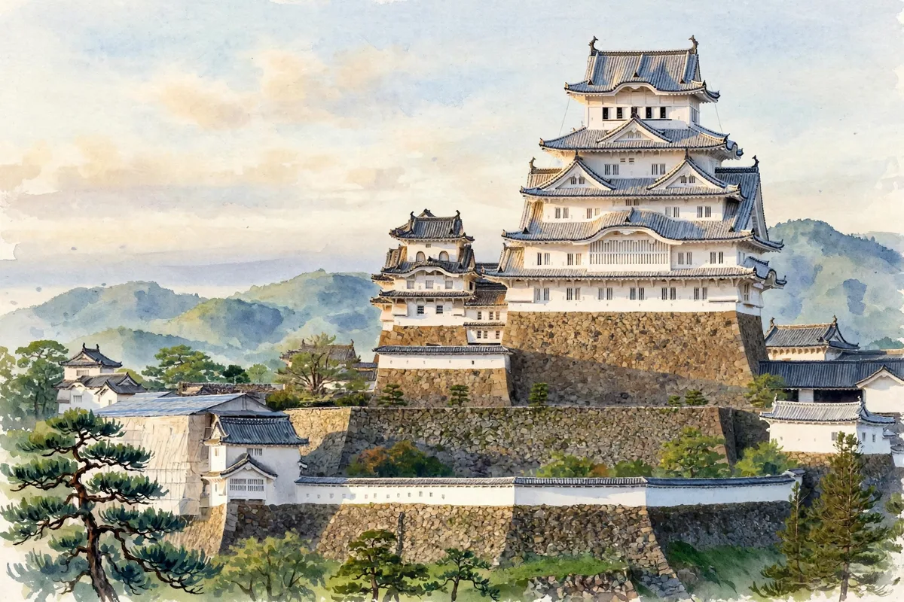

Himeji Castle
姫路城 — No. 59 of the 100 Famous Castles of Japan

| Location | Himeji City, Hyogo Prefecture (姫路城) |
|---|---|
| Built by | Akamatsu Sadanori (later greatly renovated by Ikeda Terumasa) |
| Era | 1346 / major renovation in 1601 |
| Type | Hilltop castle |
| Main keep | Surviving keep (National Treasure, World Heritage) |
About Himeji Castle
Originating as a fort of Akamatsu Sadanori, the castle took its present form through a major renovation begun by Ikeda Terumasa in 1601. Its linked keep complex, in which the main keep and three smaller keeps are connected by corridor turrets, is a National Treasure and is also registered as a World Cultural Heritage site. Its white plaster exterior has earned it the name 'White Heron Castle.'
What to look for
The linked keep complex, the Nishi-no-Maru enclosure, and the approach to the keep from Hishi-no-Mon Gate
Warlords connected with this castle
Read more in English
- Himeji Castle: 400 Years of History — How It Escaped the Flames of War and Became a World Heritage Site
- Himeji Castle Travel Guide: Highlights of the White Heron Castle and How to Explore It
Recommended books for castle explorers
Castle Guide
Samurai Castles: History / Architecture / Visitors' Guides
Hundreds of color photographs and close-up detail on Japan's most important surviving samurai castles — their history, design and military features, with guidance for visitors. The best single companion for castle sightseeing.
View at Barnes & NobleCheck the price at Barnes & Noble
Travel Guide
Lonely Planet Japan (Travel Guide), 19th Edition
Author: Lonely Planet
The standard Japan travel guide in its 19th edition — trip planning, itineraries, transport and on-the-ground detail. The practical backbone for a castle-and-shrine trip.
View at TargetCheck the price at Target
Book links on this page go to the retailers' product pages. Prices and availability are shown on the retailer's page.